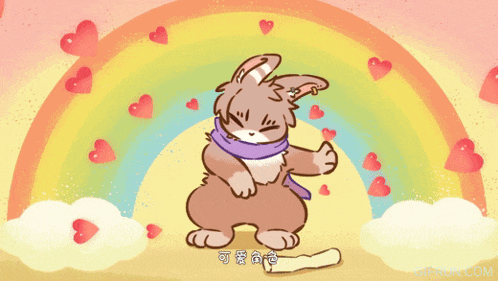

my boyfriend introduced me to this show and it's really adorable it's an adaptation from a web comic so it's all free to watch on youtube and it's so good it's called fabulous beasts and it's an animated comedy about these mystical creatures that have to find their way in the real world the bunny is my favorite he's gay and he likes this other character who is this lazy deer who basically exploits all the mystical creatures by forcing them to work for him the main character is actually this little blue dog thing named tianlu who ends up having to work with the deer guy bc he ate a bunch of treasure whitch I find really funny bc he likes eating metal a lot for some reason it's honestly really funny the whole show is hysterical and it has a really unique sense of humor somthing that is kinda sad is that the episodes are really short the whole series is pretty much around 2 hours long so you can watch all four seasons in one sitting without realizing it there also isint a dub and it's chinese so theres only episodes with english subtitles whitch is actually good enough for me though I might be waiting a while for another season of this show anyways thats all I have going on right now oh and thanks for showing me this show iqbal I love you and it was very sweet of you to watch it with me